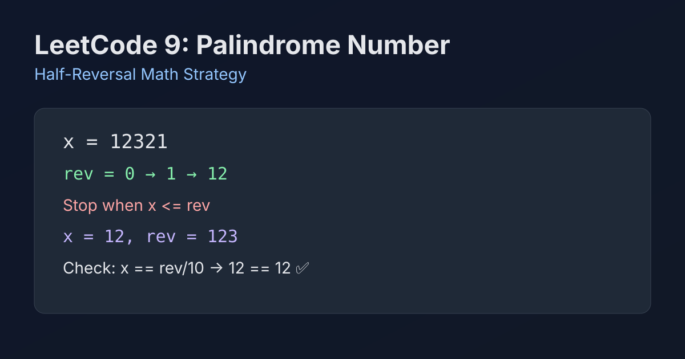

LeetCode 9: Palindrome Number (Half-Reversal Math)
LeetCode 9MathIntegerInterviewToday we solve LeetCode 9 - Palindrome Number.
Source: https://leetcode.com/problems/palindrome-number/

English
Problem Summary
Given an integer x, return true if it reads the same forward and backward, otherwise return false.
Key Insight
Do not reverse the entire integer. Reverse only the right half of digits until the reversed part is greater than or equal to the remaining left part. Then compare the two halves.
Brute Force and Limitations
A straightforward approach converts the integer to string and checks palindrome with two pointers. It works, but it uses extra memory and ignores the pure integer-math constraint.
Optimal Algorithm Steps
1) If x < 0, return false (negative sign breaks palindrome).
2) If x % 10 == 0 and x != 0, return false (leading zero after reversal).
3) Build rev from the last digits of x while x > rev.
4) For even length: check x == rev.
5) For odd length: check x == rev / 10 (drop middle digit).
Complexity Analysis
Time: O(log10(n)), we process about half of the digits.
Space: O(1).
Common Pitfalls
- Forgetting special case x = 0 should be true.
- Missing the trailing-zero rule for non-zero numbers.
- Reversing the full number can risk overflow in strict integer environments.
- Wrong loop condition (use x > rev, not x >= rev).
Reference Implementations (Java / Go / C++ / Python / JavaScript)
class Solution {
public boolean isPalindrome(int x) {
if (x < 0 || (x % 10 == 0 && x != 0)) return false;
int rev = 0;
while (x > rev) {
rev = rev * 10 + x % 10;
x /= 10;
}
return x == rev || x == rev / 10;
}
}func isPalindrome(x int) bool {
if x < 0 || (x%10 == 0 && x != 0) {
return false
}
rev := 0
for x > rev {
rev = rev*10 + x%10
x /= 10
}
return x == rev || x == rev/10
}class Solution {
public:
bool isPalindrome(int x) {
if (x < 0 || (x % 10 == 0 && x != 0)) return false;
int rev = 0;
while (x > rev) {
rev = rev * 10 + x % 10;
x /= 10;
}
return x == rev || x == rev / 10;
}
};class Solution:
def isPalindrome(self, x: int) -> bool:
if x < 0 or (x % 10 == 0 and x != 0):
return False
rev = 0
while x > rev:
rev = rev * 10 + x % 10
x //= 10
return x == rev or x == rev // 10var isPalindrome = function(x) {
if (x < 0 || (x % 10 === 0 && x !== 0)) return false;
let rev = 0;
while (x > rev) {
rev = rev * 10 + (x % 10);
x = Math.trunc(x / 10);
}
return x === rev || x === Math.trunc(rev / 10);
};中文
题目概述
给定整数 x，如果它正读和倒读都相同，返回 true；否则返回 false。
核心思路
不要把整个数字全部反转，只反转后半部分。当反转后的后半段大于等于前半段时停止，再比较两边是否一致即可。
暴力解法与不足
可先转字符串，再用双指针判断回文。实现简单，但需要额外空间，也不符合这题常见的“纯整数运算”考察点。
最优算法步骤
1）若 x < 0，直接返回 false。
2）若 x % 10 == 0 且 x != 0，返回 false。
3）循环把 x 的末位追加到 rev，条件为 x > rev。
4）位数为偶数时，判断 x == rev。
5）位数为奇数时，判断 x == rev / 10（去掉中间位）。
复杂度分析
时间复杂度：O(log10(n))，只处理约一半位数。
空间复杂度：O(1)。
常见陷阱
- 漏掉 x = 0（应为 true）。
- 忘记处理“非零且末尾为 0”的特例。
- 整数全量反转在某些语言会有溢出风险。
- 循环条件写成 x >= rev 会导致奇偶位判断混乱。
多语言参考实现（Java / Go / C++ / Python / JavaScript）
class Solution {
public boolean isPalindrome(int x) {
if (x < 0 || (x % 10 == 0 && x != 0)) return false;
int rev = 0;
while (x > rev) {
rev = rev * 10 + x % 10;
x /= 10;
}
return x == rev || x == rev / 10;
}
}func isPalindrome(x int) bool {
if x < 0 || (x%10 == 0 && x != 0) {
return false
}
rev := 0
for x > rev {
rev = rev*10 + x%10
x /= 10
}
return x == rev || x == rev/10
}class Solution {
public:
bool isPalindrome(int x) {
if (x < 0 || (x % 10 == 0 && x != 0)) return false;
int rev = 0;
while (x > rev) {
rev = rev * 10 + x % 10;
x /= 10;
}
return x == rev || x == rev / 10;
}
};class Solution:
def isPalindrome(self, x: int) -> bool:
if x < 0 or (x % 10 == 0 and x != 0):
return False
rev = 0
while x > rev:
rev = rev * 10 + x % 10
x //= 10
return x == rev or x == rev // 10var isPalindrome = function(x) {
if (x < 0 || (x % 10 === 0 && x !== 0)) return false;
let rev = 0;
while (x > rev) {
rev = rev * 10 + (x % 10);
x = Math.trunc(x / 10);
}
return x === rev || x === Math.trunc(rev / 10);
};
Comments